Judul Praktikum : Proses Osmosis Pada Kentang
Mata Pelajaran : Fisika, Biologi, Kimia, Matematika, Coding
Hari/Tanggal : Kamis / 10 Februari 2022
Waktu : 08.00 - 12.30 WIB
Tujuan Percobaan : Melakukan ekperimen osmosis pada kentang menggunakan larutan garam dan gula serta menganalisis proses yang terjadi pada peristiwa percobaan osmosis
Alat dan Bahan : 1. Kentang
2. Pisau
3. Timbangan
4. Talenan
5. Gelas ukur
6. Sendok ukur (5gr)
7. Label, spidol
8. Gula 10gr
9. Garam 10gr
10. Penggaris
11. Aqua gelas
Langkah-langkah :
1. Siapkan alat dan bahan
2 Kupas kentang (kentang bentuk persegi Panjang)
3. Cuci kentang sampai bersih
4. Buatlah kentang bentuk persegi dengan sisi masing-masing 4 cm
5. Amati tekstur fisik pada kentang kemudian timbang masing-masing menggunakan timbangan digital
6. Masukan kentang masing masing satu ke dalam wadah berisi larutan gula maupun garam kedalam setiap wadah berisi konsentrasi larutan yang berbeda-beda.
7. Amati tekstur fisik pada kentang setelah didiamkan di dalam larutan gula dan garam selama semalam.
8. Catat hasil pengamatan pada table pengamatan
HASIL PERCOBAAN
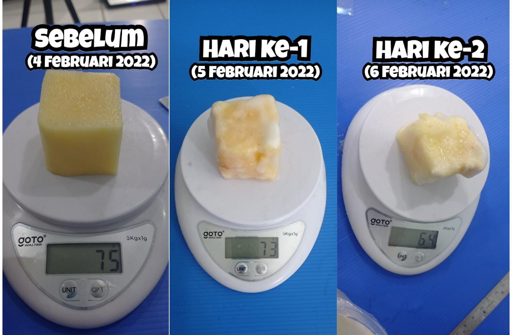
(Pengamatan berat kentang pada larutan garam)
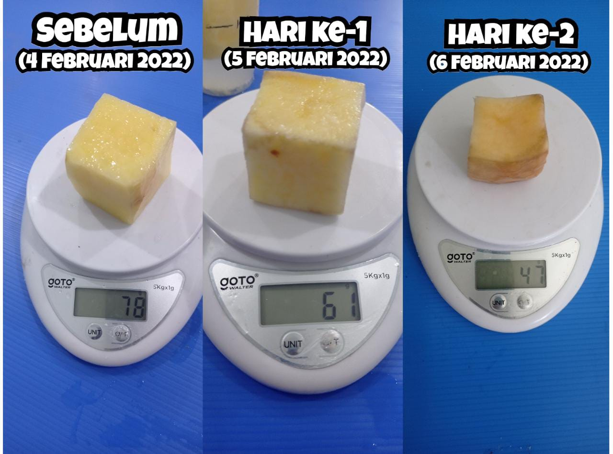
(Pengamatan berat kentang pada larutan gula)
PEMBAHASAN Definisi Tekanan Osmotik :
Tekanan osmotik adalah tekanan hidrostatik yang terbentuk pada larutan akibat proses osmosis pelarut ke dalam larutan melalui membran semipermeabel. Selain itu, tekanan osmotik juga dapat didefinisikan sebagai tekanan luar yang diberikan pada larutan untuk menghentikan proses osmosis pelarut ke dalam larutan melalui membran semipermeabel
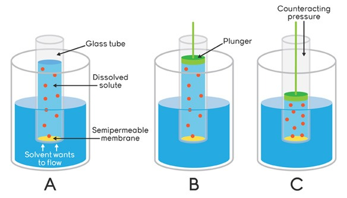
R U M U S
Rumus dari tekanan osmotik adalah:
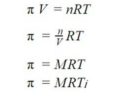
Keterangan:
M = Molaritas Larutan
R = Tetapan Gas (0,082 L.atm/mol.K)
T = Suhu (Kelvin = K)
i = faktor Van't Hoff = α (n-1)+1
n adalah jumlah ion dan
α adalah derajat ionisasi
Note! Larutan elektrolit kuat α =1
Larutan elektrolit lemah 0<α<1
Larutan non elektrolit α=0
TABEL PENGAMATAN
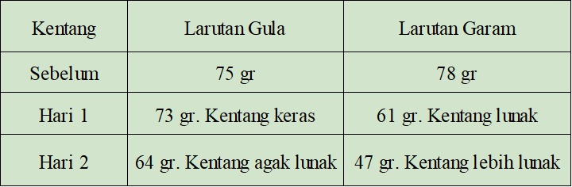
Reaksi-reaksi
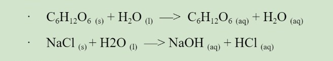
Perhitungan :
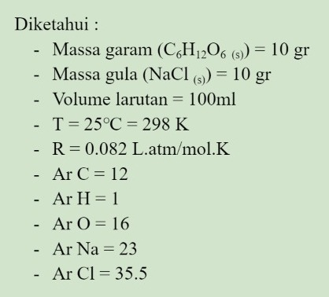
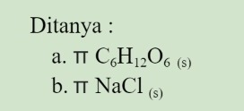
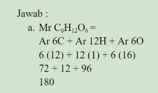
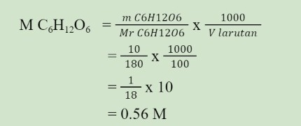
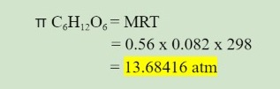
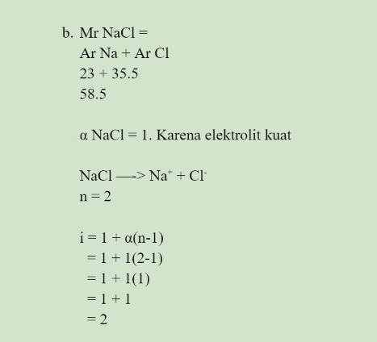
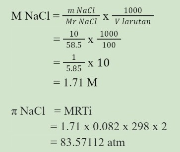
Berdasarkan percobaan jelaskan reaksi kimia pada peristiwa osmosis kentang pada larutan garam dan gula , buatlah laporan ilmiahnya !
Osmosis adalah perpindahan molekul pelarut (air) melalui selaput semipermiabel dari bagian yang lebih encer ke bagian yang lebih pekat atau dari bagian yang konsentrasi pelarut (air) rendah (hipotonis) ke konsentrasi pelarut (air) tinggi (hipertonis). Membran semipermeabel harus dapat dilewati oleh pelarut, tetapi tidak oleh zat terlarut, yang mengakibatkan gradien tekanan sepanjang membran.
Ada 3 jenis tekanan osmotik jika membandingkan tekanan suatu larutan dengan larutan lainnya, yaitu:
Isotonik, larutan yang mempunyai tekanan osmotik sama dengan tekanan osmotik larutan lainnya
Hipertonik, larutan yang mempunyai tekanan osmotik lebih besar dari tekanan osmotik larutan lainnya
Hipotonik, larutan yang mempunyai tekanan osmotik lebih kecil dari tekanan osmotik yang lain.
Dari percobaan diatas, dapat disimpulkan beberapa hal, yaitu :
Berkurangnya berat dan ukuran kentang pada kedua larutan disebabkan oleh proses osmosis secara hipertonik, dimana tekanan larutan air pada kentang lebih tinggi dibandingkan tekanan pada larutan gula dan garam, sehingga air dari dalam kentang berpindah keluar melalui membran semipermiabel dan menyebabkan berkurangnya berat dan ukuran kentang.
Kentang menjadi lunak setelah direndam air gula dan air garam karena tekanan dalam kentang lebih kecil dibandingkan dengan tekanan larutan gula dan larutan garam, sehingga selain berkurangnya berat dan ukuran, kentang juga menjadi lebih lunak dibanding sebelumnya.
Adanya perbedaan berat awal kentang disebabkan oleh tingkat kepadatan dari kentang itu sendiri. Walaupun memiliki ukuran yang sama, namun setiap kentang memiliki tingkat kepadatan yang berbeda-beda, berdasarkan cara penanamannya.
Faktor van't Hoff (i) adalah ukuran efek zat terlarut terhadap sifat koligatif seperti tekanan osmotik, penurunan relatif dalam tekanan uap, kenaikan titik didih dan penurunan titik beku. Pada perhitungan tekanan osmosis larutan gula tidak menggunakan faktor van’t Hoff karena pada larutan non-elektrolit faktor van’t Hoff nya bernilai 1 karena tidak memiliki ion, sehingga tidak diperlukan faktor van’t Hoff dalam perhitungan sifat koligatifnya. Sedangkan para larutan elektrolit (garam), faktor van’t Hoff nya lebih dari 1 sehingga diperlukan perhitungan.
Dari kesimpulan diatas, maka percobaan yang telah dilakukan sesuai dengan teori osmosis dan teori faktor van’t Hoff.